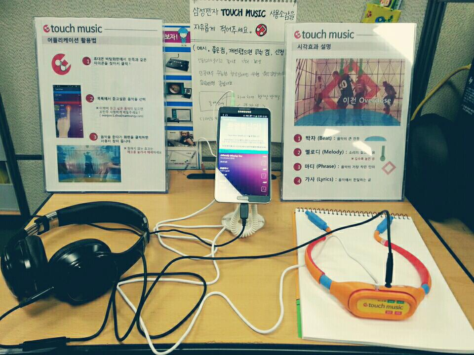
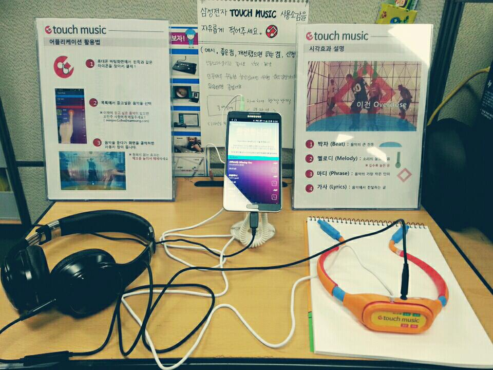

>Samsung Creative Lab : Touch Music
- Date:2014
- Category:Music Interface, Creative Project
- Tags:Creative Projects, V-Plotter
Employees at Samsung's Creative Lab (C-Lab)are encouraged to pitch ideas with creative or altruistic elements.
The winners are given time off from their the current works and are invited to create their ideas in reality.
After few months of the screening process, I was selected as one of 15 members who were given honor to work in the C-lab HQ for a year.


Music for the deaf
In 2013, Samsung reached its pinnacle of success after the consecutive success of the Galaxy series. Samsung’s new strategy as a “Life Companion” was thought to have been one of the reasons for success because it softened its brand image to be more human-friendly.
Despite their efforts, Samsung was alientating the people and distracting them from the main benefits of a Samsung smartphone: making and receiving calls.
What does music mean to the deaf?

Concept
The concept of the product was to combining two other senses (Visual/Touch) to expand sound experience.

Design
The wearable device synchronizes with the Android application and converts the beats and melodies of the music into haptic vibrations that can sensed by the chest bone of deaf users. The device was designed similar to existing music players because deaf people do not want to draw attention to their disability as the deaf is barely distinguishable from people without disabilities unless they start using sign language.


User Study
Several user interviews were conducted to test with deaf users invited from the Seoul Deaf Association. Our main purpose was to observe how much interest they have in listening to or enjoying music and how they actually enjoy it.
 
